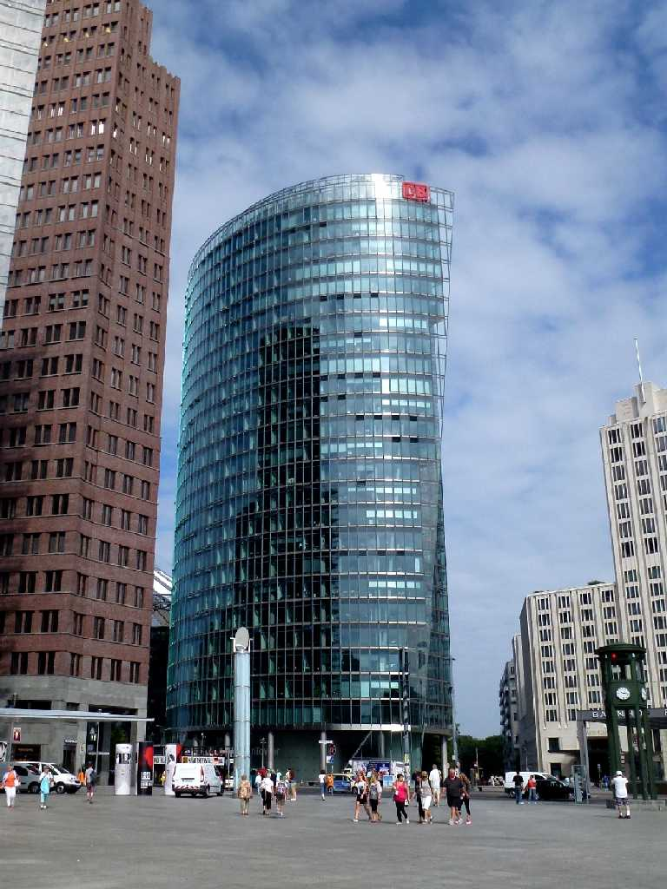
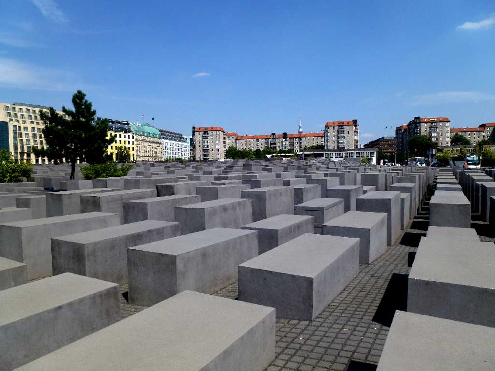
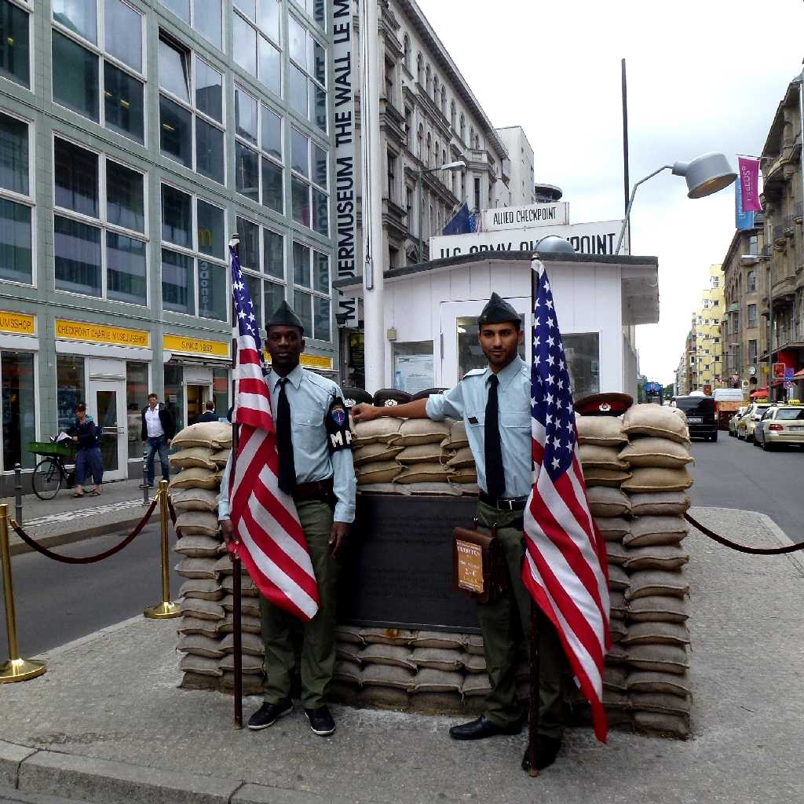
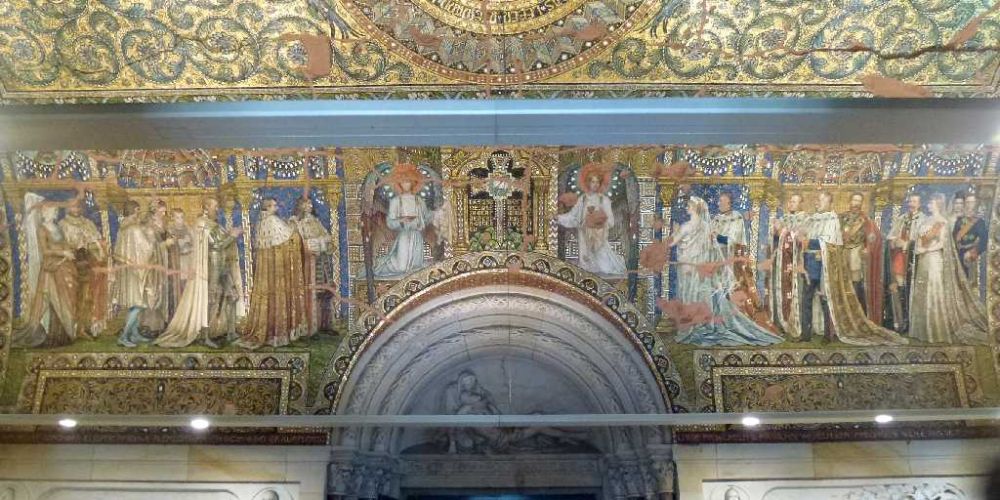
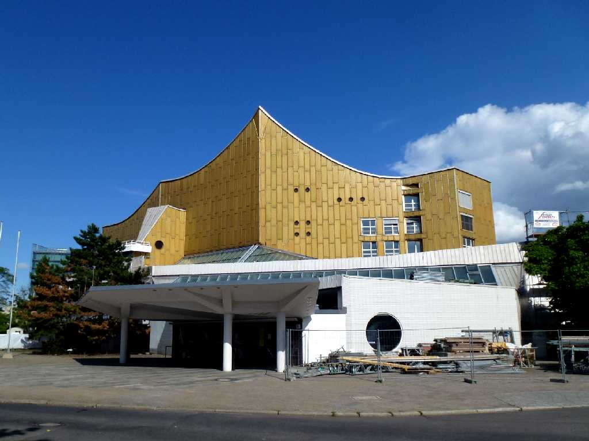

August 1 2013 Potsdamerplatz Berlin
８０日間世界一周鉄道の旅で３９日目 旧西ドイツの中心街ポツダム広場

Holocaust Mahnmal
ホロコースト記念碑はホロコースト時代に命を失ったユダヤ人達の鎮魂の碑

Checkpoint Charlie

Kaiser Wilhelm Gedächtniskirche

Berliner Philharmoniker
ベルリンフィルハーモニー管弦楽団の本拠地